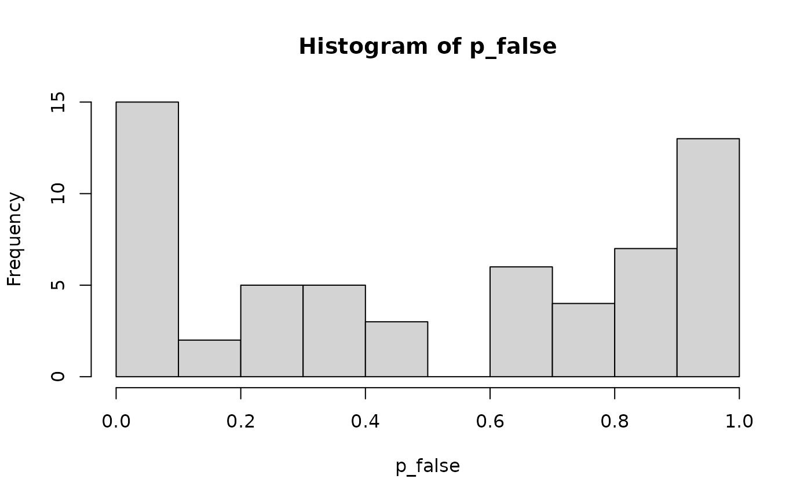

Participants judge Some of the cards have stars when all, some or none of the cards have stars. In the all-context the sentence is literally true but under-informative: pragmatic responders say "false", logical responders "true". Participants differ strongly, so responses there are bimodal by participant. 60 participants, 24 items, three counterbalanced lists.
Format
A tibble with 1440 rows and 6 columns:
- participant
Participant ID,
P01toP60.- list
Counterbalancing list, 1 to 3.
- item
Item ID,
i01toi24.- context
How many cards have stars:
"some"(true control),"all"(critical) or"none"(false control).- response
"true"or"false".- rt
Response time in ms.
Details
True model: in the all-context, each participant answers "false" with their own probability, drawn from Beta(0.5, 0.5) (mostly near 0 or 1). Controls are answered correctly 96% of the time. Reaction times follow
where pragmatic_false marks a "false" response by a pragmatic
responder and logical_true a "true" response by a logical responder,
both in the all-context only, with by-participant (SD 0.15) and by-item (SD 0.05)
intercepts and residual SD 0.25.
Examples
all_ctx <- subset(scalar_implicature, context == "all")
p_false <- tapply(all_ctx$response == "false", all_ctx$participant, mean)
hist(p_false, breaks = 10)

controls <- droplevels(subset(scalar_implicature, context != "all"))
tapply(controls$response == "true", controls$context, mean)
#> some none
#> 0.96250 0.04375
aggregate(rt ~ response, data = all_ctx, FUN = median)
#> response rt
#> 1 true 1437.5
#> 2 false 1765.5